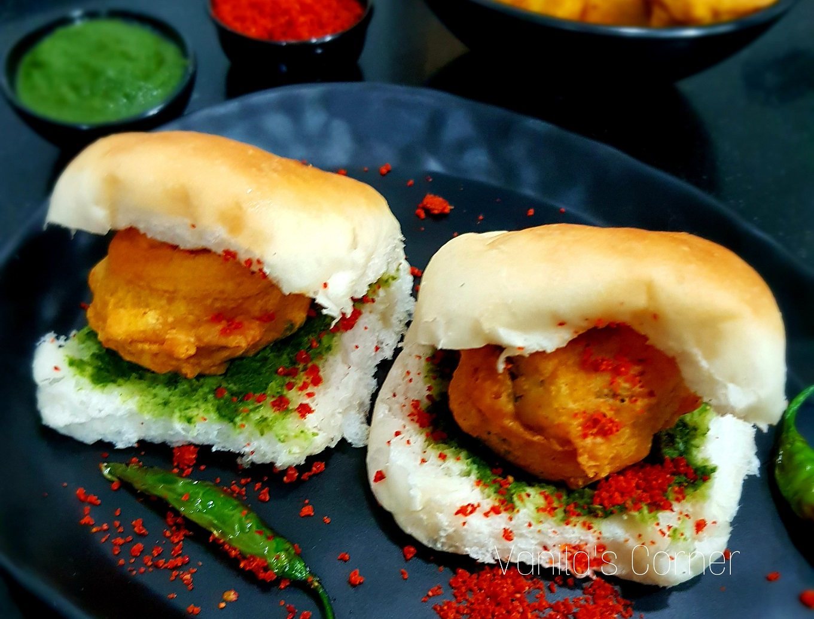
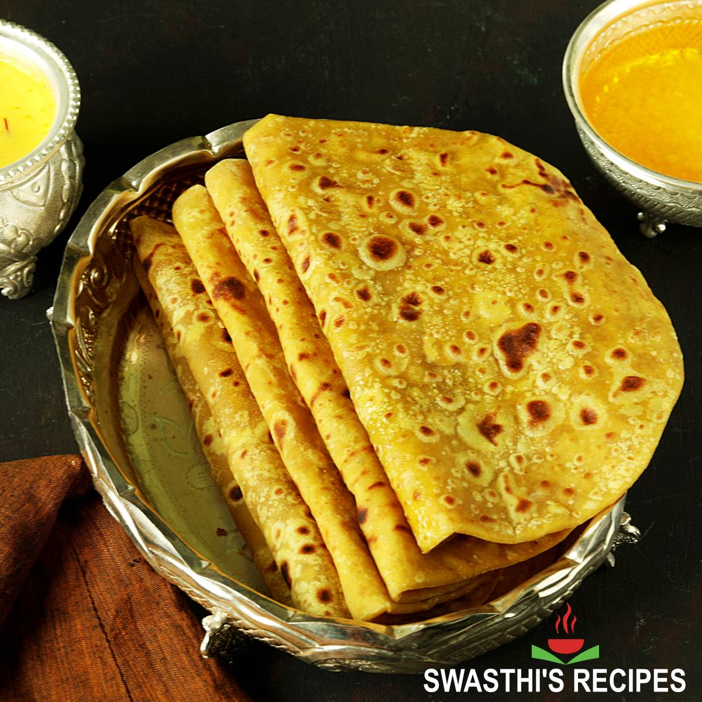

Vada Pav
Vada Pav is Known as the Indian burger, Vada Pav consists of a spicy potato fritter (vada) sandwiched between a bread bun (pav), served with chutneys and fried green chili.

A popular street food from Mumbai, Pav Bhaji is a spicy mashed vegetable curry served with soft buttered bread rolls (pav). The bhaji is typically garnished with onions, coriander, and a squeeze of lemon.

Puran Poli
A sweet flatbread stuffed with a mixture of chana dal (split chickpeas), jaggery, and cardamom. It is a traditional Maharashtrian dish made during festivals.